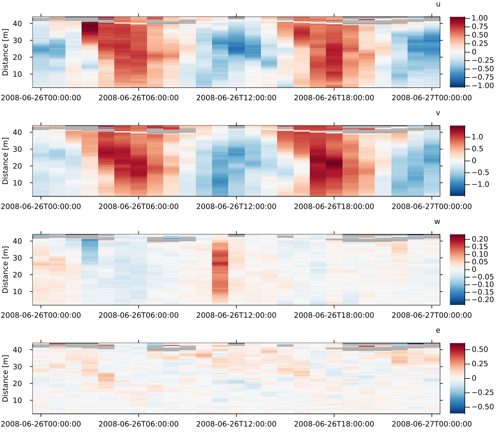
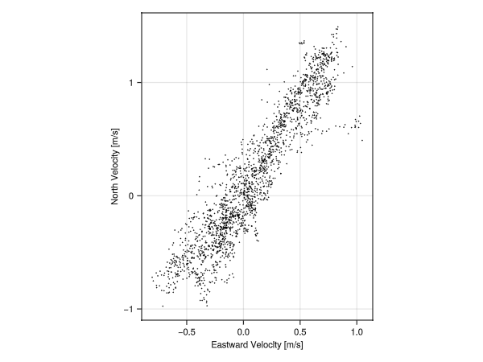
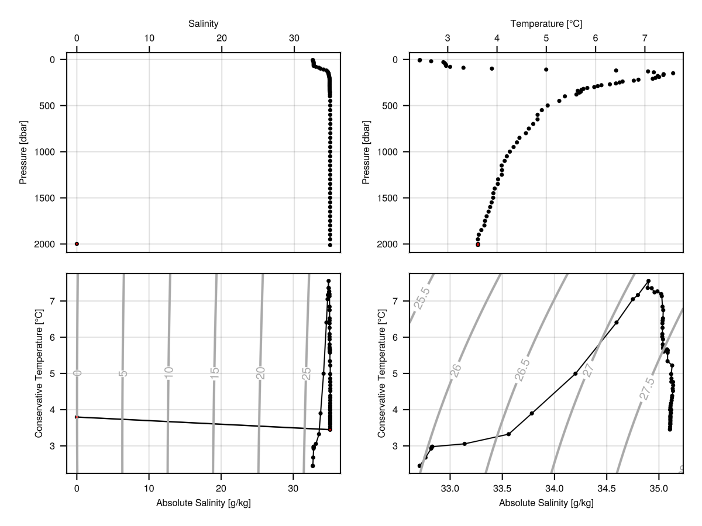
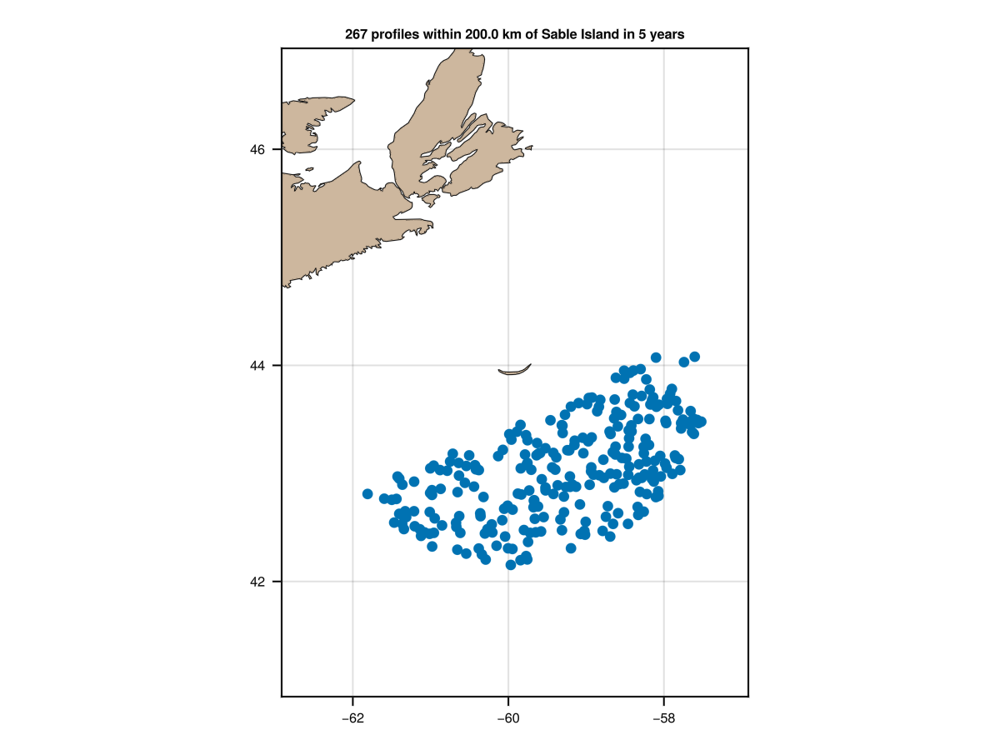
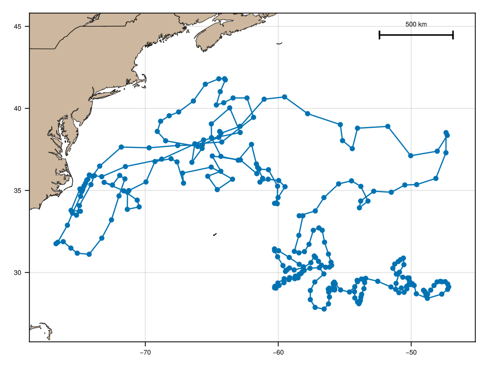
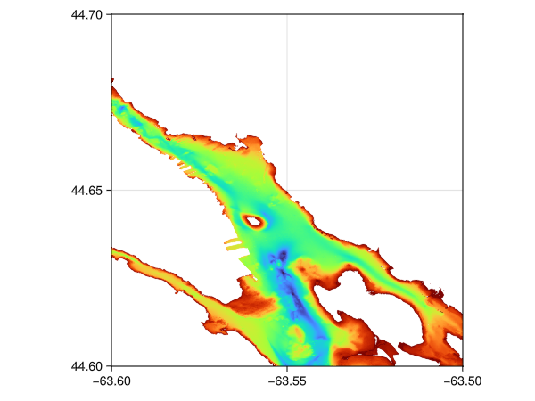
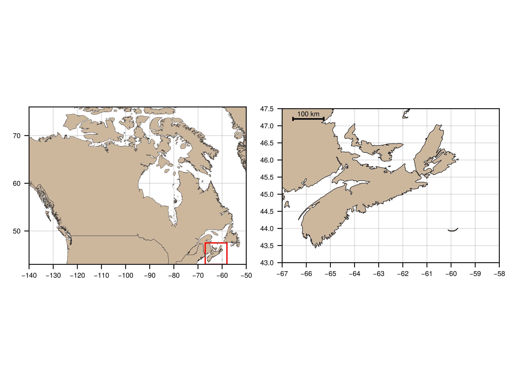
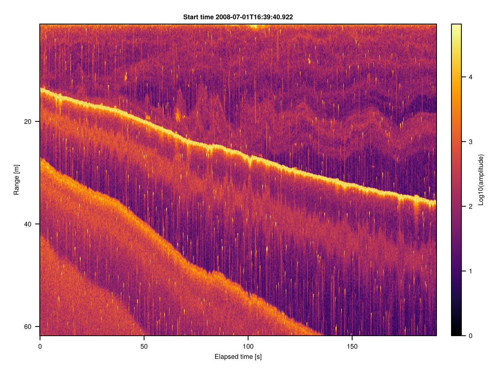
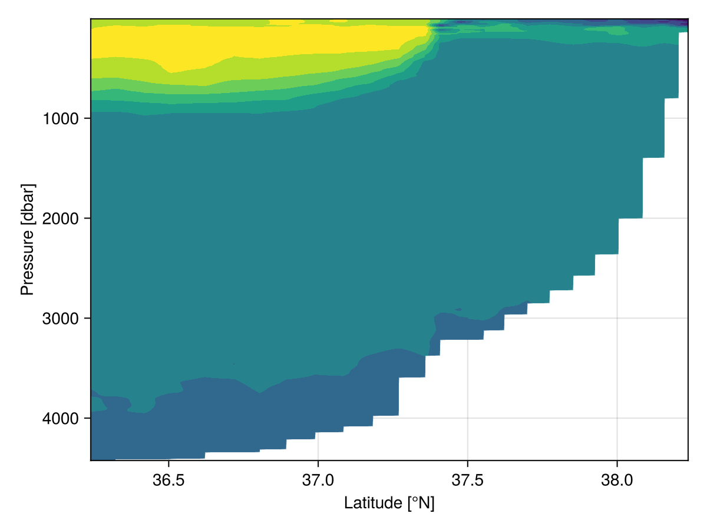

Examples
Acoustic-Doppler Profiler Data
A built-in file (sub-sampled to just one sample per hour, and only a single day) is provided with the package. Below, you can see how to plot (1) images of velocity components as a function of time and distance and (2) covariation of eastward and northward components, with a red line indicating local coastal orientation.
using OceanAnalysis, Plots
file = joinpath(dirname(dirname(pathof(OceanAnalysis))),
"data", "adp_rdi.000")
beam = read_adp_rdi(file);
xyz = beam_to_xyz(beam);
enu = xyz_to_enu(xyz, declination=-18.1); # decl for local region
# 1. Heatmap of u, v and w
plot_adp(enu; size=(800, 700), dpi=150)
savefig("adp_rdi_heatmap.png")
# 2. U-V scattergraph, with local coastline direction shown
# In R, find angle of coastline for Île-aux-Lièvres
# load("/Users/kelley/git/oar_book/data/coastlineSLE.rda")
# plot(coastlineSLE,clon=-69.7,clat=47.79,span=100)
# ial <- locator(2) # click on ends of IAL
# xy <- lonlat2utm(lon=ial$x,lat=ial$y)
# a <- diff(xy$northing)/diff(xy$easting)
plot_adp(enu, which=:uv)
a = 1.71 # from the R code shown above (private file)
plot!([-1; 1], [-a; a], color=:red, label=false, dpi=150)
savefig("adp_rdi_uv.png")

AMSR Satellite Data
The AMSR satellite provides several data streams, including sea-surface temperature, which may be plotted as follows.
# North Atlantic Sea Surface Temperature
using OceanAnalysis, Plots, Dates
f = get_amsr("2025-09-07");
a = read_amsr(f, "SST");
plot_amsr(a, xlims=(290.0, 340.0), ylims=(30.0, 60.0), color=:turbo,
levels=0.0:2.5:30.0, clim=(0, 30))
savefig("amsr.png")
Argo Data
Argo Profile
The following shows how to read an Argo NetCDF file, convert to a Ctd object, and then make a summary plot.
# Read and plot a built-in Argo file
using OceanAnalysis, Dates, Measures, Plots, Printf
filename = joinpath(dirname(dirname(pathof(OceanAnalysis))), "data",
"D4902911_095.nc")
argo = read_argo(filename)
ctd = as_ctd(argo)
p1 = plot_profile(ctd; which="CT");
p2 = plot_profile(ctd; which="SA");
p3 = plot_profile(ctd; which="sigma0");
p4 = plot_TS(ctd);
title = @sprintf("CTD observations at %.3fN and %.3fE, on %s",
ctd.metadata["latitude"], ctd.metadata["longitude"],
Dates.format(ctd.metadata["time"], "yyyy-mm-dd"))
plot(p1, p2, p3, p4, layout=(2, 2), size=(800, 600), margin=0.25cm,
dpi=200, plot_title=title, plot_titlefontsize=9)
savefig("argo_profile.png")
Argo quality-control handling
The following illustrates the use of handle_qc for Argo data. The top row shows salinity and temperature profiles, with red dots for points marked with quality-control (QC) values other than '1'. (Note that Argo QC values are stored as characters, not as numbers.) The bottom row shows a TS diagrams for the raw data and the cleaned-up data. Note that the salinity errors are so large as to control the plot scales in the left-hand panels. This is not an uncommon situation, and so it is a good idea to handle QC flags early in analysis procedures. However, sometimes the flags seem to be in error, and so a prudent analyst will start by plotting as in the top row. Exercise: add a middle row showing just the cleaned-up profiles.
plotting
# Illustrate QC processing of hydrographic data
using OceanAnalysis, Plots
f = joinpath(dirname(dirname(pathof(OceanAnalysis))), "data", "D4901076_139.nc")
argo = read_argo(f);
ctd = as_ctd(argo);
ctd_clean = handle_qc(ctd);
ul = plot_profile(ctd; which="salinity", dpi=200, fontsize=6)
badS = ctd["salinity_qc"] .!= '1'
scatter!(ctd["salinity"][badS], ctd["pressure"][badS], color=:red, markersize=2)
ur = plot_profile(ctd; which="temperature", dpi=200, fontsize=6)
badT = ctd["temperature_qc"] .!= '1'
scatter!(ctd["temperature"][badT], ctd["pressure"][badT], color=:red, markersize=2)
ll = plot_TS(ctd, fontsize=6)
bad = badS .| badT
scatter!(ctd["SA"][bad], ctd["CT"][bad], color=:red, markersize=2)
lr = plot_TS(ctd_clean, fontsize=6)
plot(ul, ur, ll, lr, layout=(2, 2))
savefig("argo_qc.png")

Argo Search
The following shows how to map Argo profile locations made within 200 km of Sable Island, during the past year.
# Show Argo profiles within 200 km of Sable Island in last year
using OceanAnalysis, CSV, Dates, DataFrames, Plots, Printf
# Get the index
index_file = get_argo_index("~/data/argo")
index_all = read_argo_index(index_file) # 3.2e6 profiles
# Set time subset
today = now(UTC)
start = today - Dates.Year(1)
recent = start .< index_all.time .< today
# Set distance subset
SI_lon = -59.915
SI_lat = 43.934
radius = 200.0 # km
distance = map(i -> geod_distance(SI_lon, SI_lat,
index_all.longitude[i], index_all.latitude[i]),
1:nrow(index_all))
near = distance .< radius
# Filter by both time and distance
index = index_all[recent.&near, :]
# Extend region of map to show geographic context
aspect_ratio = 1.0 / cos(SI_lat * pi / 180.0)
scale = radius / 111.0
plot_stations(index.longitude, index.latitude,
xlims=SI_lon .+ scale .* (-1.2, 1.2) .* aspect_ratio,
ylims=SI_lat .+ scale .* (-1.2, 1.2))
float_IDs = replace.(index.file, r".*/(.*)_.*" => s"\1") |> unique;
t = @sprintf("%d profiles of %d floats", length(index.file), length(float_IDs))
title!(t, titlefontsize=9)
scale_bar(100; x=:right, y=:top)
savefig("argo_search.png")
Argo Trajectory
The following shows how to display a trace of the positions of a single Argo float.
# Plot a float trajectory with colour for sequence number
using OceanAnalysis, Plots, Printf, Statistics
ID = r"D4902911" # focus on this ID
index_file = get_argo_index("~/data/argo");
index_all = read_argo_index(index_file) # 3.2e6 profiles
index = index_all[occursin.(ID, index_all.file), :]
sort!(index, :time) # this lets us join dots in time order
lon, lat = index.longitude, index.latitude
plot(lon, lat,
aspect_ratio=1.0 / cos(mean(lat) * pi / 180),
framestyle=:box, color=:gray, dpi=200,
title=@sprintf("Argo float %s coloured by cycle index", ID.pattern),
titlefontsize=9)
colors = cgrad(:turbo)
scatter!(lon, lat, marker_z=1:length(lon),
markersize=3, markerstyle=:circle, color=colors)
# Add land and 1km isobath
plot_coastline!(coastline())
topo_file = get_topography(-110.0, -30, 20, 60, resolution=30,
destdir="~/data/topo")
topo = read_topography(topo_file)
contour!(topo.metadata["longitude"], topo.metadata["latitude"],
topo.data, xlim=xlims(), ylim=ylims(),
color=:gray, linewidth=2, colorbar_entry=false, levels=[-1000.0])
scale_bar(500; x=:right, y=:top)
savefig("argo_trajectory.png")
Bathymetry (high-resolution) Data
High-resolution bathymetry data
Bathymetry files at 10m and 100m resolution are provided for some Canadian waters via a somewhat-awkward GUI interface at https://data.chs-shc.ca/dashboard/map. The following shows how to plot such data, after downloading a dataset. (This only works for the TIFF form of the data.)
using OceanAnalysis, Plots
filename = expanduser("~/data/nonna/NONNA10_4460N06360W.tiff")
n = read_nonna(filename);
heatmap(n["longitude"], n["latitude"], n.data, c=:turbo,
size=(400, 400), dpi=300, framestyle=:box, tickdirection=:out)
savefig("nonna.png")
Bathymetry (low-resolution) and topography data
The following downloads topographic data for a domain including southern Nova Scotia, and displays the data in three plot styles.
using OceanAnalysis, Plots, TiffImages
topo_file = get_topography(-67, -63, 43, 46, resolution=1)
topo = read_topography(topo_file);
p1 = plot_topography(topo, domain=:both);
p2 = plot_topography(topo, domain=:sea);
p3 = plot_topography(topo, domain=:land);
plot(p1, p2, p3, layout=(1, 3), size=(800, 200), dpi=300)
savefig("topography.png")
Coastline Data
The following produces a world map in Cartesian coordinates, with aspect ratio set so that shapes and relative sizes are appropriate at the equator.
using OceanAnalysis, Plots
c = coastline()
plot_coastline(c)
savefig("coastline.png")
CTD Data
The following shows how to read a built-in CTD file, and plot some hydrographic diagrams.
# Read and plot a built-in CTD file
using OceanAnalysis, Dates, Measures, Plots, Printf
filename = joinpath(dirname(dirname(pathof(OceanAnalysis))),
"data", "ctd.cnv")
ctd = read_ctd_cnv(filename);
p1 = plot_profile(ctd; which="CT");
p2 = plot_profile(ctd; which="SA");
p3 = plot_profile(ctd; which="sigma0");
p4 = plot_TS(ctd);
title = @sprintf("CTD observations at %.3fN and %.3fE on %s",
ctd["latitude"], ctd["longitude"], ctd["time"])
plot(p1, p2, p3, p4, layout=(2, 2), size=(800, 600), margin=0.25cm,
dpi=200, plot_title=title, plot_titlefontsize=11)
savefig("ctd_diagram.png")
Echosounder Data
This uses a private data file acquired using a Biosonics scientific echosounder.
# This uses a private file
using OceanAnalysis, Plots
f = "/Users/kelley/Dropbox/data/archive/sleiwex/2008/fielddata/2008-07-01/Merlu/Biosonics/20080701_163942.dt4"
if isfile(f)
e = read_echosounder(f)
plot_echosounder(e)
savefig("echosounder.png")
end
Section Data
The following code downloads data from a section survey in the North Atlantic ocean. (See https://cchdo.ucsd.edu for paths to other sections, noting that only the data type named 'exchange' is handled by the OceanAnalysis package.) Then it reads the data, and isolates a subset that runs roughly orthogonal to the mean path of the Gulf Stream. Finally, it plots a chart of sampling locations, along with cross-section diagrams of salinity and temperature.
using OceanAnalysis, Plots
url = "https://cchdo.ucsd.edu/data/41926/90CT40_1_ct1.zip";
dir = get_section(url);
s = read_section(dir);
s.data = s.data[s["longitude"].<-68.0];
sg = grid_section(s);
p1 = plot_stations(s, xlim=(-80, -65), ylim=(35, 43));
scale_bar(500);
p2 = plot_section(sg, "salinity", ylim=(0, 2000));
p3 = plot_section(sg, "temperature", ylim=(0, 2000));
l = @layout [a; b c]
plot(p1, p2, p3, layout=l, dpi=200);
savefig("section.png")